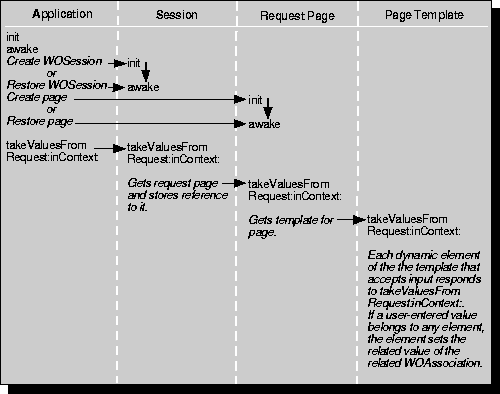

Table of Contents
Table of Contents  Previous Section
Previous Section
Taking Values From the Request
The first phase of the request-response loop (see Figure 19) synchronizes the state of the request component with the HTML page as submitted by the user. In this phase, the appropriate dynamic elements extract the values that users enter and the choices they make in the request page and assign them to declared variables.
For example, if the user clicked a checkbox, the dynamic element that represents that checkbox must be set to the "checked" state. In other words, the checked attribute of the appropriate WOCheckbox dynamic element must be set to YES.

Figure 19. Taking Values From the Request
A cycle of the request-response loop begins when the WOAdaptor receives an incoming HTTP request. The adaptor object packages this request in a WORequest and forwards this object to the application object in a handleRequest: message. Upon receiving this message, the application object does the following:
- It creates the WOResponse and WOContext objects that will be needed.
- It invokes its own awake method.
- It determines which session and which request page are associated with the request, as described next.
Table of Contents  Next Section
Next Section